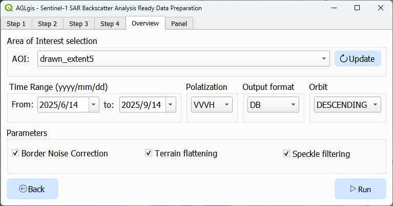
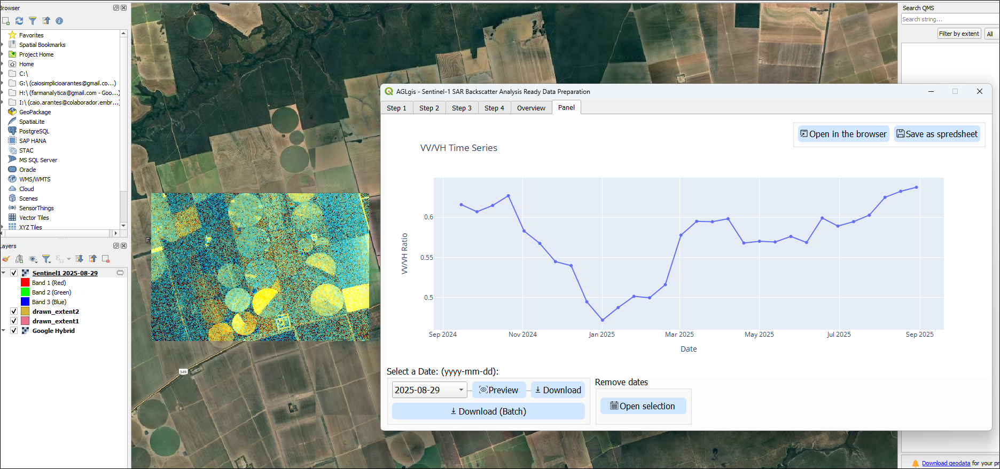
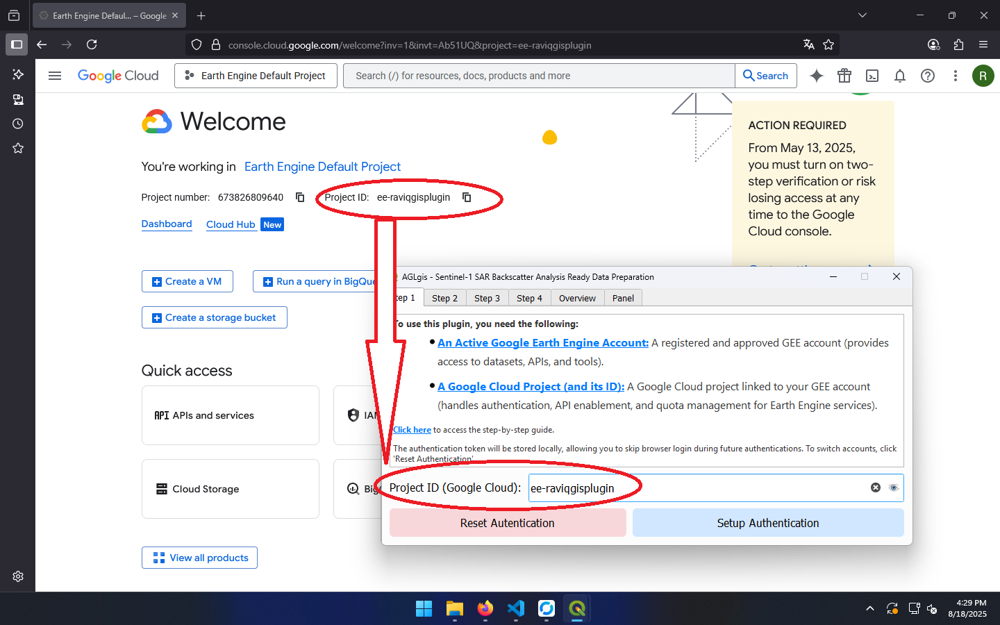

AGLgis
O AGLgis é uma interface gráfica para facilitar do Sentinel-1 SAR Backscatter Analysis Ready Data Preparation in Google Earth Engine no QGIS.
Este plugin permite configurar e executar o processamento de dados SAR Sentinel-1 sem necessidade de programação.
Principais funcionalidades
- Interface gráfica para seleção de área, datas e parâmetros de processamento.
- Integração direta com o pacote
ee-s1-ard, tornando o fluxo de trabalho mais acessível.
- Suporte à correção de ruído de borda, nivelamento de terreno e filtragem de speckle.
- Exportação dos resultados prontos para análise e visualização.
Parâmetros suportados

Exemplo de Série Temporal e Imagem Selecionada

Acima, uma demonstração da série temporal gerada pelo plugin e uma imagem SAR da data selecionada.
Configuração do Projeto Google Cloud

A imagem acima mostra onde encontrar o ID do seu Projeto Google Cloud, necessário para autenticar e executar o pacote ee-s1-ard no Google Earth Engine.
Certifique-se de ter um projeto válido no Google Cloud Console e utilize o ID ao configurar o plugin.
Citação
Qualquer trabalho publicado que utilize este plugin deve citar a seguinte referência como fonte do framework de processamento:
Mullissa, A.; Vollrath, A.; Odongo-Braun, C.; Slagter, B.; Balling, J.; Gou, Y.; Gorelick, N.; Reiche, J. Sentinel-1 SAR Backscatter Analysis Ready Data Preparation in Google Earth Engine. Remote Sens. 2021, 13, 1954. https://doi.org/10.3390/rs13101954
AGLgis
AGLgis is a graphical interface designed to simplify the use of the Sentinel-1 SAR Backscatter Analysis Ready Data Preparation in Google Earth Engine in QGIS.
This plugin allows users to configure and run Sentinel-1 SAR data processing without the need to write code.
Main features
- Graphical interface for selecting area, dates, and processing parameters.
- Direct integration with the
ee-s1-ard package, making the workflow more accessible.
- Support for border noise correction, terrain flattening, and speckle filtering.
- Export of results ready for analysis and visualization.
Supported Parameters
Time Series Example and Selected Image
Above, a demonstration of the time series generated by the plugin and a SAR image from the selected date.
Google Cloud Project Setup
The image above shows where to find your Google Cloud Project ID, which is required for authenticating and running the ee-s1-ard package in Google Earth Engine.
Make sure you have a valid project set up in the Google Cloud Console and use the Project ID when configuring the plugin.
Citation
Any published work that uses this plugin must cite the following reference as the source for the processing framework:
Mullissa, A.; Vollrath, A.; Odongo-Braun, C.; Slagter, B.; Balling, J.; Gou, Y.; Gorelick, N.; Reiche, J. Sentinel-1 SAR Backscatter Analysis Ready Data Preparation in Google Earth Engine. Remote Sens. 2021, 13, 1954. https://doi.org/10.3390/rs13101954